About this Release
This is a 1.2.1 release of the Sony Ericsson WebSDK Packager.
Limitations are listed in Release Notes.
Introduction
Sony Ericsson‘s WebSDK Packager is based on the open source PhoneGap framework, enabling developers to write native applications using HTML and JavaScript as an alternative to Java or C++. WebSDK Packager can be used on Windows® and Mac OS® X platforms.
The current version supports the following Sony Ericsson handsets:
Prerequisites
Installation
To install the WebSDK Packager, start by downloading it from Sony Ericsson Developer World.
The installation procedure should be self-explanatory.
After installation, the following components are installed:
Using the Web SDK Packager
The first time you start the Sony Ericsson WebSDK Packager, you will get a “Get Started” setup window. Please follow the installation wizard.
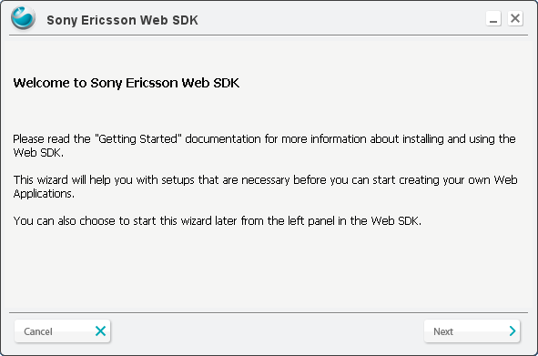
It is mandatory for Android to install the Java Development Kit (JDK). A link to the JDK is provided by the setup. If you already have installed the JDK, type in the existing JDK path or press the Browse button and select the root folder for JDK.
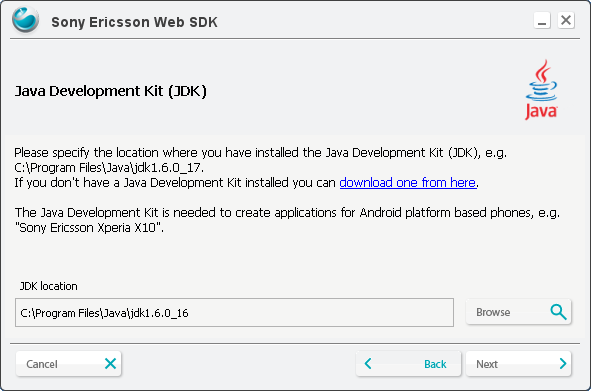
It is also mandatory for Android to install the Android SDK. In the same way as for JDK above install the SDK path.

The Eclipse plug-in is not mandatory, but it will help you to create a new PhoneGap application project. See “Using Eclipse plugin”.
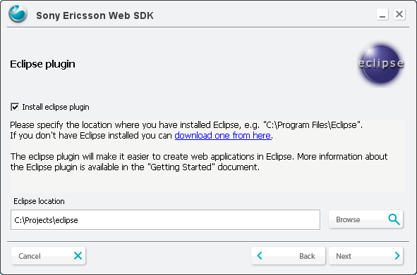
PhoneGap Simulator already included with WebSDK Packager, in this step you can select another version of Simulator.
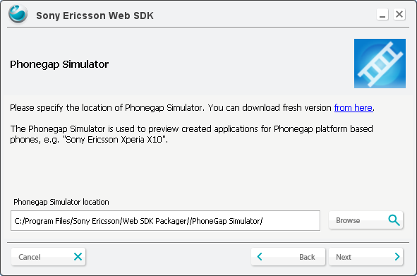
To start the WebSDK Packager, take a folder anywhere on your disk and generates an application for the selected target.
Assume you have added all your asset files in the folder my_application. Right-click on the folder and select “Generate Web Application” (only on Windows)
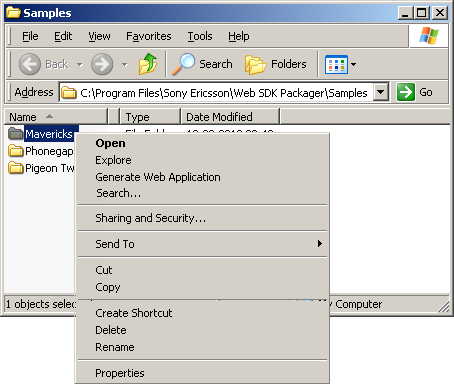
Another way to launch Sony Ericsson WebSDK Packager is through the Start menu.

Before you can create a new application for Symbian or Android, you must fill in the mandatory fields. Sony Ericsson WebSDK Packager will help you in this part of the process.
The first view of the Sony Ericsson Web SDK Packeger will show in the right side the folder view selected.
The setting that are mandatory will always shows in red if they are not filled in. You can also use mouse to scroll over a field to get more information about the respective settings.
To create an Android or Symbian application, press the Create button. The created installation file for your application will be placed in your selected output folder. For Android, it will be possible to install the new application either on the Xperia X10 or the Android Simulator.
To run the Android Simulator, press the Start Android SDK and AVD Manager button.

If you did not use AVD manager before, you have no devices. Follow these steps to create one.

Select page Available packages, choose “SDK Platform” for example version 2.2, documentation and samples are optional.

After installing packages virtual device could be created


Switch to page Virtual Devices and press the New button.

Select virtual device and create a new, write a name and select any target (for example 2.2) and press Create AVD. To run the Android AVD, press Start.

After Android Simulator is started, press the Install button to install the application to the simulator.

In the case of Symbian, it is only possible to create the application. To install it on the device, use PC Suite or the external memory card.
It is also possible to run the PhoneGap Simulator using the Preview button. Adobe AIR must be installed in order to run the Simulator. To get Adobe AIR, just follow the link http://get.adobe.com/air/

For Android settings, press the Android button.
In the Android general settings, you have specified the root of the Android SDK path and the path for the Java JDK. Android Project Stub is used for generating Android applications; it is recommended to keep the default value.
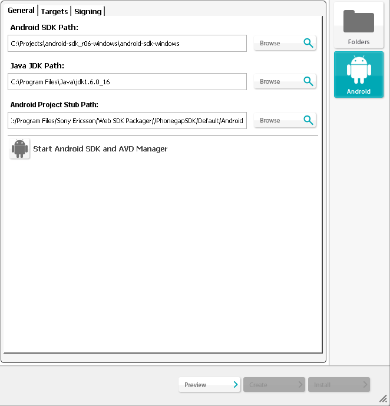
The Android Targets view displays the installed targets.
Note: Currently, Android SDK versons 1.6 - 2.2 is supported.

If no target shows as the picture below, you must run the Android SDK setup and install the available package, then select Android SDK platform 2.2.
To run the Android SDK setup, press the Start Android SDK and Android Virtual device (Android Simulator) Manager button.
NOTE: Always select latest target (2.2 for now) even if you prepare application for previous versions of Android platform (see Using PhoneGap across all Android devices).
Android Signing is used to sign your application. For development purposes, select debug.
To create applications which can be uploaded to the android market, select unsigned or signed release. The unsigned application need to be signed by an external tool before uploading.
For signed release you need to have a key store file containing a suitable key.
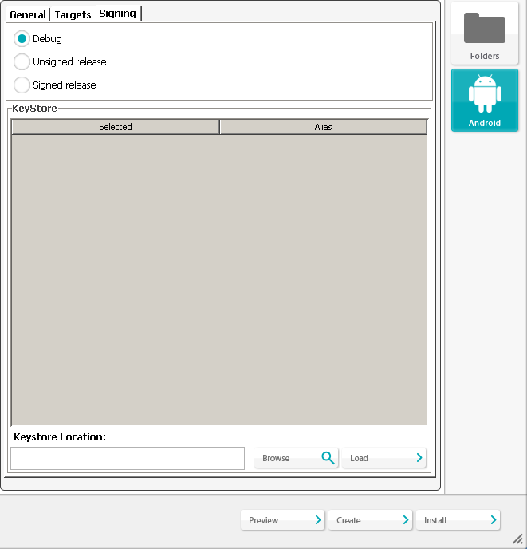
Installing application to Android
First select one of sample application from left menu

Click the Android icon to create the application.
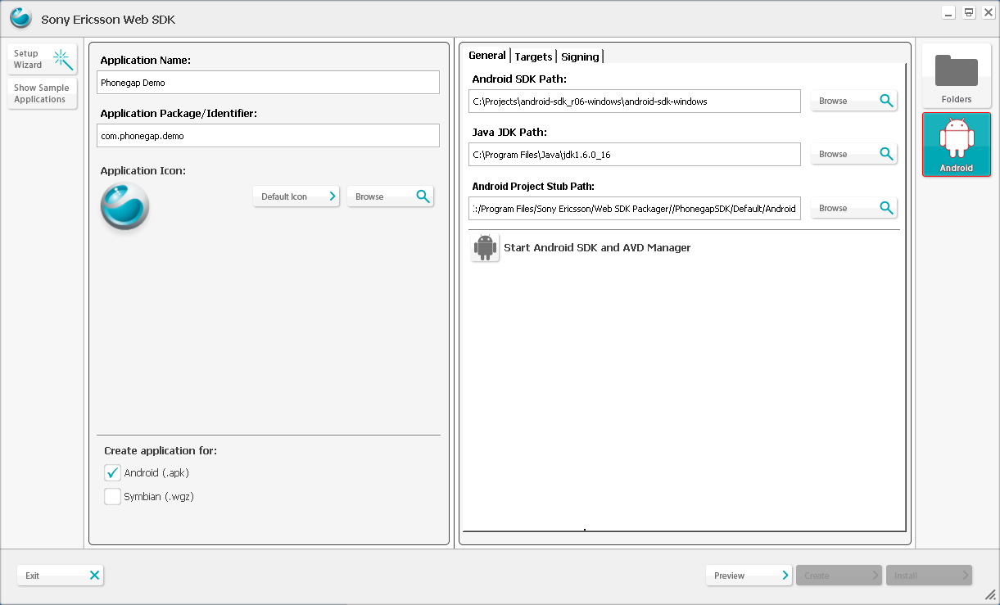
Press AVD Manager to start the emulator.
In the checklist of available packages, to start emulator, a new virtual device should be created first.

Press button “New” and create new device.
Check list of virtual devices, select one and press “Start”
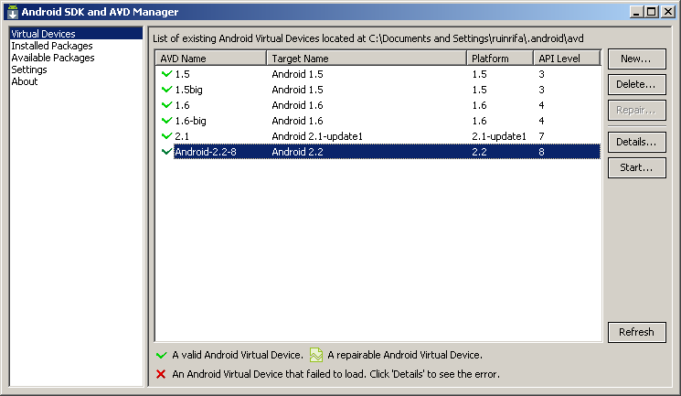
When emulator is started, the application can be installed.

Switch to WebSDK window and press the Create button.
Application created

Press “Install” button to install application to emulator.
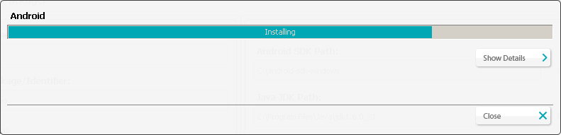
Application installed
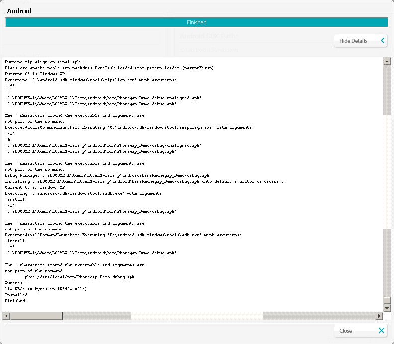
Switch to emulator window and open main menu then start application by clicking to icon
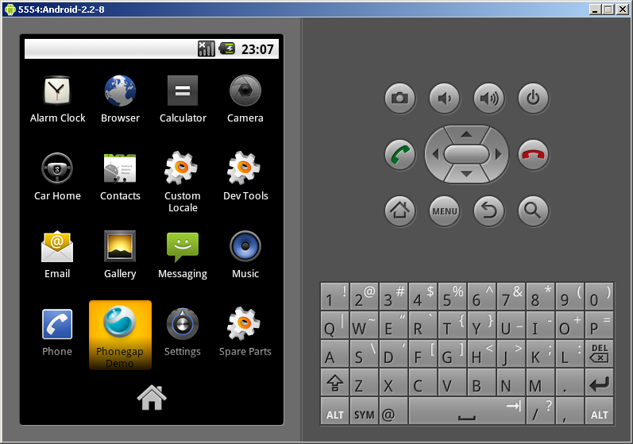
Application is started

Using Eclipse Plugin
With the Sony Ericsson Web application Plugin, you can easily create a Phonegap template. Press Ctrl+N to access the “new wizard” or go to File >New>Other in the menu and select Web Application>New web application Project.
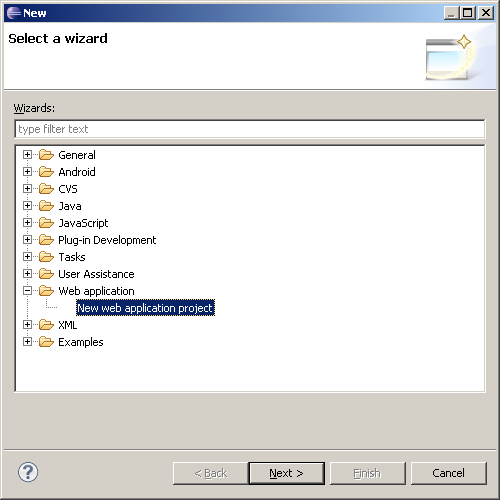
Press Next and type in the project name in the field. This name will be shown in the phone as the application name. Package name (for Android) or Identifier (for Symbian) is mandatory. Then press Finish.
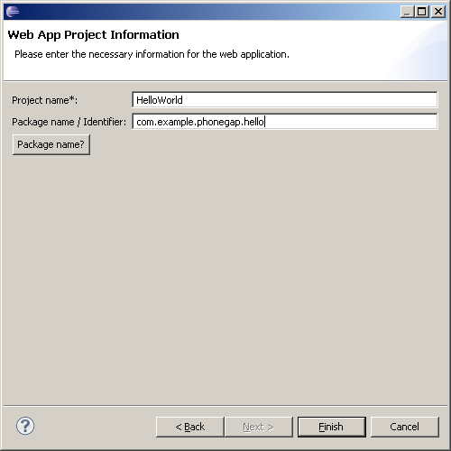
A new template project will be created for you. The template will contain the necessary files that a PhoneGap project needs and with a “Hello World” index file ready to launch or modify.
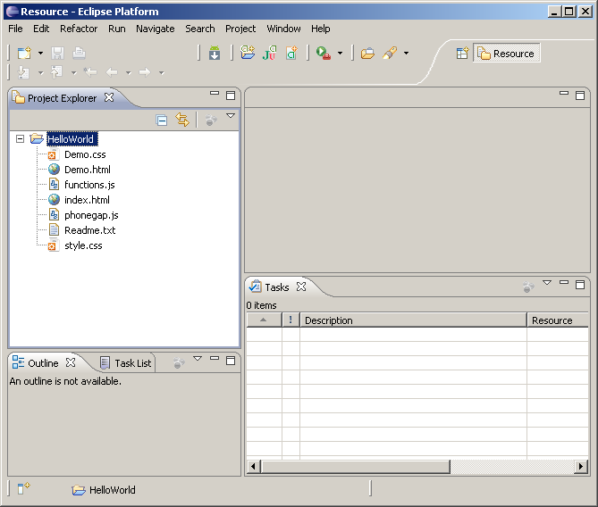
From the Eclipse project, it will possible to launch the PhoneGap Simulator or the Sony Ericsson WebSDK Packager. Right-click on the project folder and press Launch PhoneGap Simulator or Launch WebSDK Packager.

Links
About Sony Ericsson Developer World
At Sony Ericsson Developer World, developers can find the latest technical documentation and development tools such as phone White papers, Developers guidelines for different technologies, Getting started tutorials, SDKs (Software Development Kits) and tool plugins.
The Web site also features news articles, moderated discussion forums offering free technical support and a Wiki community sharing expertise and code examples.
For more information about these professional services, go to the Sony Ericsson Developer World website.
Trademarks and Acknowledgements
PhoneGap is copyright of Nitobi.
Xperia, Satio, Vivaz are trademarks or registered trademarks of Sony Ericsson Mobile Communications AB.
Other product and company names mentioned herein may be the trademarks of their respective owners.